Site & Context
The project explores how Thorup Strand, Denmark's last active small-scale fishing community, can adapt to environmental and social change while sustaining its coastal commons.
Located on the north-west coast of Jutland, Thorup Strand is defined by its distinctive beach-landing practice. The project expands the site beyond the landing beach to include Vester Torup and the surrounding dune landscapes, together forming an interconnected system that supports fishing practices and community life.
 Map
Map
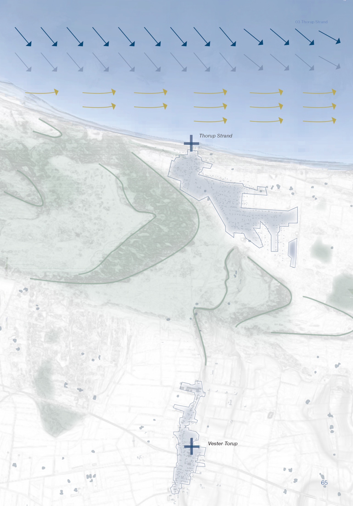
Map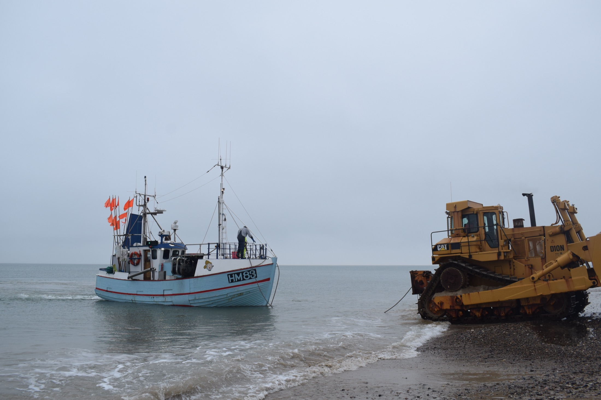
Photo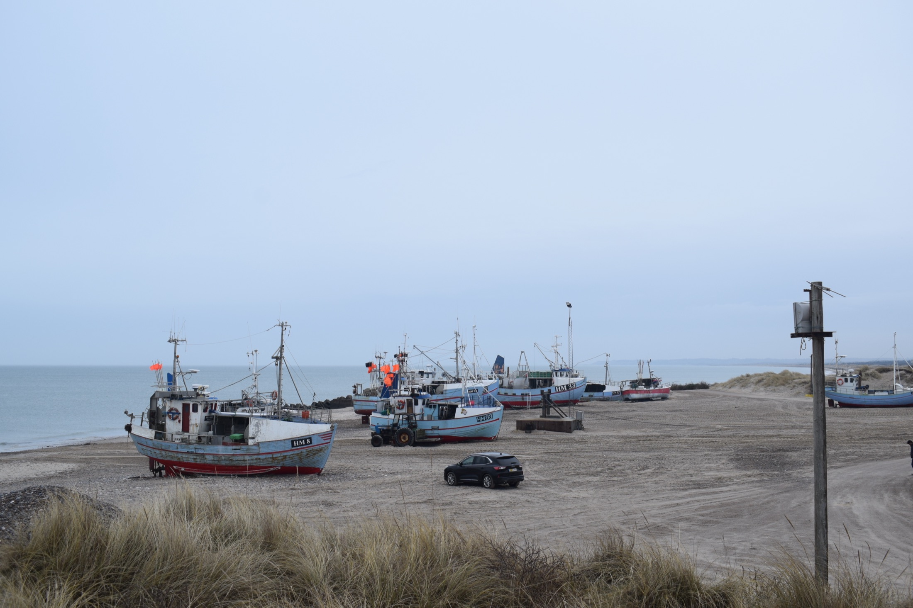
Photo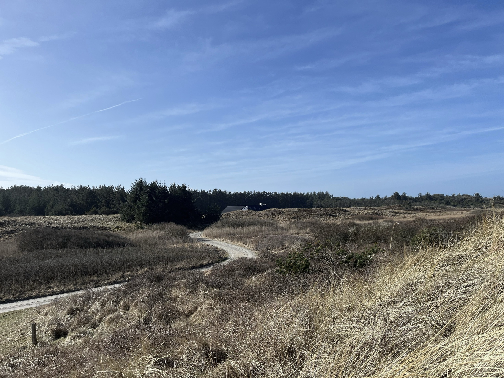
PhotoConcept & Strategy
Rather than treating Thorup Strand as a fixed coastline to protect, the project approaches it as a living coastal commons shaped by relationships between fishing, community life, ecological systems and coastal processes.
"Continuity does not mean physical permanence. It means maintaining the capacity of the coastal commons to evolve."
- ▲Visible CommonsKeep the working coast visible and accessible.
- ■Living CommonsSupport the continuation and evolution of fishing knowledge.
- ●Ecological CommonsStrengthen relationships between fishing and marine ecosystems.
- ◆Adaptive CommonsAllow infrastructure, livelihoods and landscapes to adjust gradually.
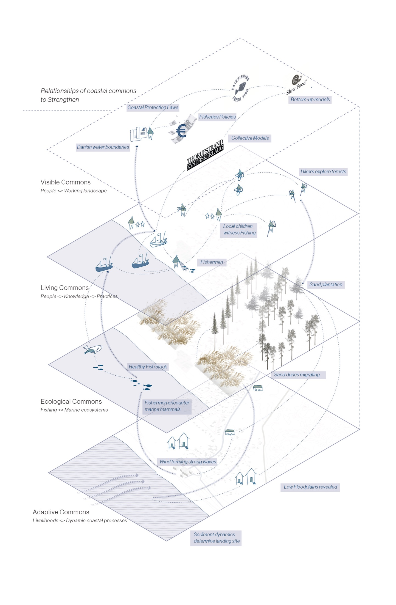
Diagram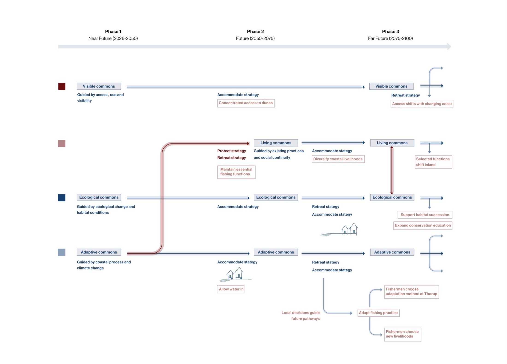
DiagramDesign Proposal
Two axonometric views of the same stretch of coast, forty years apart — drag to compare Thorup Strand preparing for change in 2026 with the commons living alongside change by 2100.
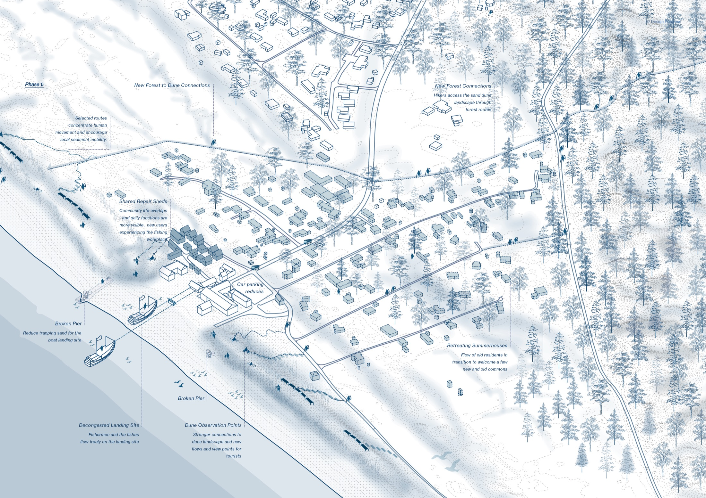
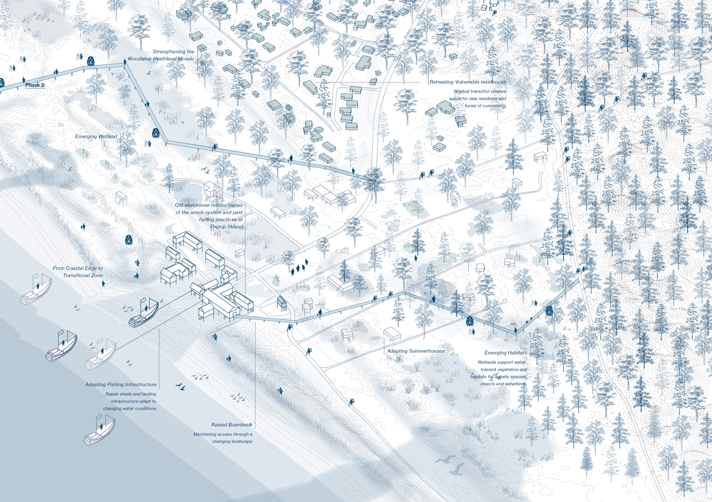
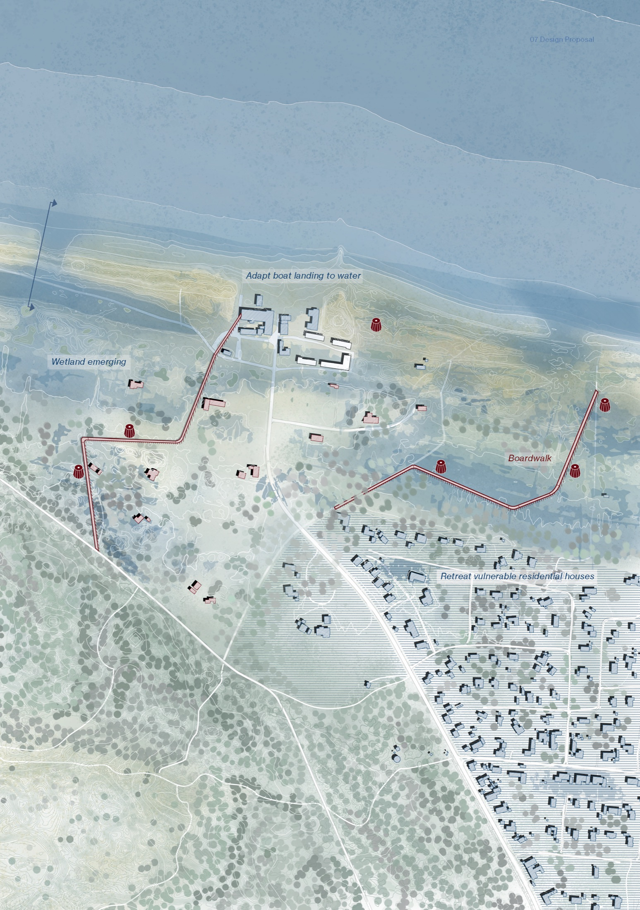
Site Plan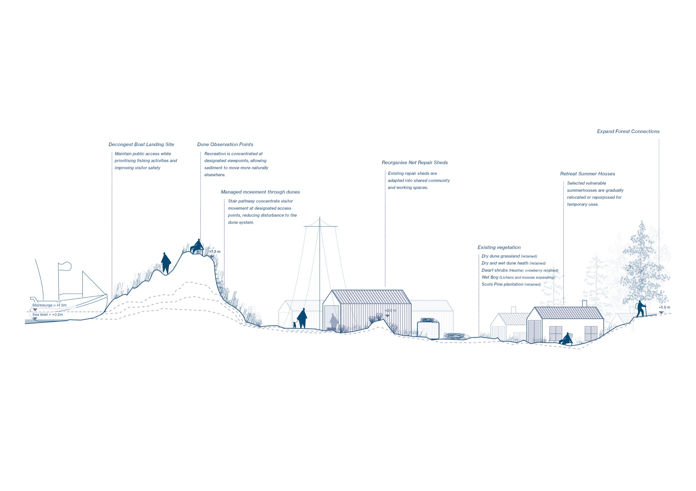
Section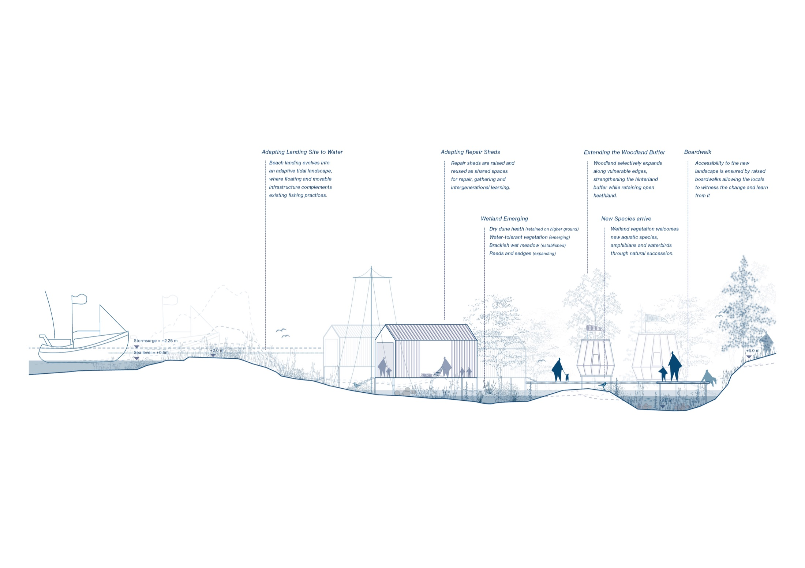
Section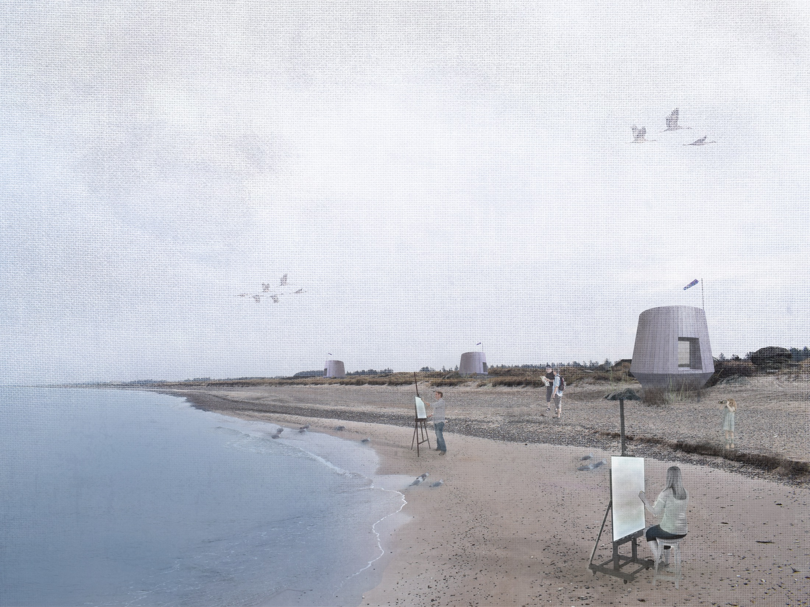
Visualization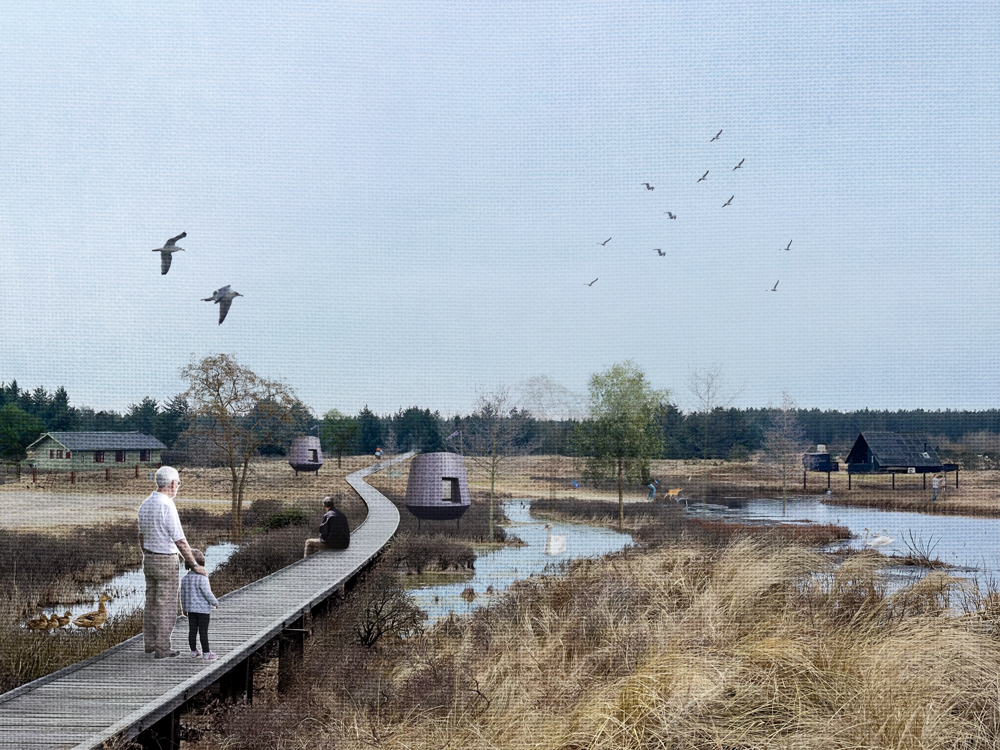
VisualizationReflection
Thorup Strand demonstrates that the future of a coastal community depends not only on the physical condition of its landscape, but also on the capacity of relationships between people, practices, institutions and environments to adapt and endure. Re-enchanting the coastal commons is therefore not about preserving an idealised past, but about recognising and strengthening the social, ecological and cultural relationships that allow communities to navigate uncertainty and shape their own futures.
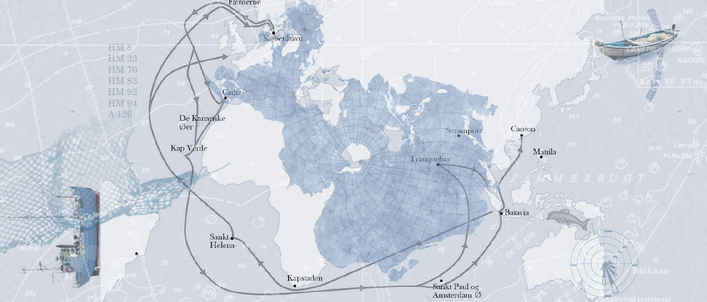
Collage